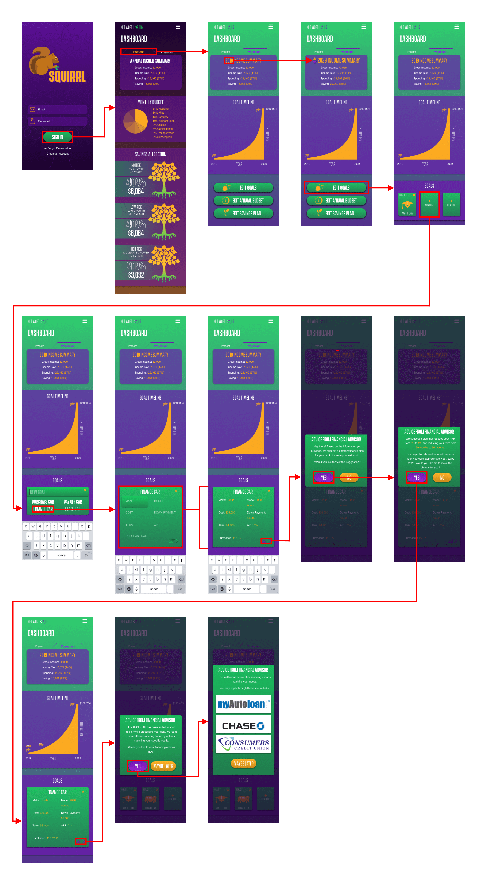

Squirrl

Overview
Squirrl is an AI financial advisor app.
Project Type:
Class Project
Team:
Lamont - Leader, UX Researcher, & UX Designer
Eva - UX Researcher
Lindsay - UI Designer
Tools:
Pen + Paper
Sketch
Adobe Illustrator
Invision
Problem
Finance is a difficult subject to master and with countless financial products and a massive learning curve,
it is very difficult for busy working professionals to dedicate their own time to learn this space and keeping
up with the volatile market. We also found that since the 2008 financial crisis that many millennials became
distrusting of financial institutions and reluctant to enter the equity market. To make matters worse, the
economy has even been more difficult for younger generation due to much higher cost of living for the younger
generations compared to baby boomers and generation X.
We believe that millennials are having difficulty preparing for their future, staying up to date with their
finances, and keeping up with their spending/budgeting habits because there is no easy-to-use tool on the
market that helps the user build a financial plan. Squirrl may solve this problem by offering an AI financial
advisor personalized for each individual user to accomplish specific goals.
Challenge
Since finance is a very complex subject to understand with a very steep learning curve, the margin of error for making a critical design mistake is enormous. To overcome this first challenge, a significant amount of time needed to be devoted to better educating ourselves on this subject. However, we believed that even then it would not be enough to rely on only designers to build a financial app. As such, we proceeded with consulting with one of the top financial advisors from JPMorgan Chase. Then to ensure feasibility of our design, we also spent significant resource on building the prototype tool in excel to simulate some of the app's back-end features; for example, forecasting. But even though we went through these processes, we continued to encounter significant challenges with trying to simply such complex material into a mobile device format that delivered accurate, useful, usable, and user-friendly information for the user. This challenged us to create dozens of paper prototype iterations that constantly got revised after performing A/B testing.
Design Goal
Our app’s goal is to assist the user in making the best financial decisions possible given their financial state. We wanted to create an experience in which an individual with no financial background feels confident and in complete control of reaching their goal. Our UX process was to discover, define, design, and deliver the product.
UX Process
Our UX process began with the 'Discover' phase by creating a proto persona, conducting surveys, performing researches, competitive analysis, and user interview. Afterwards we proceeded with 'Defining' our ideal users by creating an empathy map, user persona, storyboard, and journey map. We then continued with 'Designing' by creating an affinity diagrams, perform feasibility test, creating decision flow diagrams, paper prototypes, and perform A/B testing. Finally, to complete our UX process, we 'Delivered' wireframes, a style guide, and the high-fidelity prototype.
Discover
Return to UX ProcessProto Persona
For our app, we started with a hypothesis that our AI financial advisor app is more likely to attract millennials so we made this our target audience. Some reasons we believed millennials were the more likely to use this app were,
1. We believed many millennials today are struggling with the rising cost of living
2. Growing up through the 2009 recession played a major role in conditioning millennials to be more
conscious
of their spending and inadvertently reluctant of invest in the market
3. We believed many millennials now are in student debt and are looking for ways to get out of debt
4. We believed millennials are technology savvy and are not resistant to trying new apps
5. We believed millennials are now too busy to invest time into learning finance
6. We also believed many millennials want to start planning for their financial future but need help and
aren’t sure how to start
Survey
We started off our user research by trying to create a non-bias survey. To ensure the survey was neutral, we
asked a broad range of questions regarding the topic of finance. We started off with questions to learn
about
our demographic by
asking questions regarding age, current financial state, current income, & etc. Then our survey dove into
questions regarding the user’s current financial behavior, their current financial plan, their future
financial plan, and any tools/methods they currently use to plan their financial future. In total, we asked
24 questions. Below are some examples of respondents from our survey that supported our hypothesis with
possible solution.
With the exception of possibly 1 individual, all 27 of our respondents were Millennials or Gen Z.
40.7% of respondants do not have a good handle on their finances and financial future while 11.1% are
unsure.
However, we found that 92.6% of respondents plan to invest more money than they currently do.
But on a scale of 1-5, over half of respondents believe they are not educated enough in stocks of similar
types of equity investment.
The problem we found was that a significant number of respondents (44.4%) do not know what steps to take to
gain control of their finance.
We prepared several possible solutions to encourage users to better budget and plan for their financial
future. From our surveys we found that 59.3% wanted an app that can track their spending and 48.1% wanted an
app that can simulate their budget.
Then we asked respondents to provide the name of any tool/apps they currently use to manage their finance.
Our plan was to later run a competitive analysis and exploit the weakness and strength of each of these
tools/apps.
Article Research
From our above surveys we found several repeating patterns from our respondents so we searched for news articles to support these findings. In total, we reviewed 14 articles from multiple sources. Our objective here was to learn more about our target demographic and their user problems. The subject we researched were,
1. Millennials want to save money
2. Millennials want to plan for their financial future but lack tools and knowledge
3. Millennials fear the stock market
4. Millennials are stuck with student debt
5. Millennials want to save up for a home but have no way to plan or afford one
Click here
to review the articles we researched.
Competitive Analysis
Afterwards we dove into running a competitive analysis on all the apps/tools that our users mentioned. We
also took the liberty to search for any additional apps on the market that may possibly solve this user
problem. For each competitor, we evaluated their market cap, user base, revenue model, value proposition,
target demographic, unique feature, and then ran a SWOT analysis. The key takeaway from our competitive
analysis was that we found BoA and Mint to be direct competitors.
BoA’s key strength that we wanted to adopt was their app’s ability for the user to easily understand their
spending habit and to set budgets. However, a major weakness of their app is that they cannot run this
analysis on non-BoA accounts and their app cannot simulate a budget plan or keeping track and guide the user
in real-time.
Mint’s key strength we wanted to adopt was their ability to consolidate all the user’s financial accounts
into one view. However, their major weakness is an inconsistent UI, steep learning curve, too many
irrelevant
functions + views, and it does not simulate a budget plan or keep track and guide the user in real-time.
Click here
to view the competitive analysis.
Consulting Financial Advisor
We consulted Frank Kuo, a financial advisor from Chase Bank and the #1 performing banker in 2017. From our
preliminary consultation, we received 3 key feedbacks.
1. Frank strongly believes an app like this will attract mostly Millennials so our app should focus on this
demographic.
2. Most of Frank’s client have zero understanding of finance and will frequently derail from financial plans
that Frank prepared for the client. To defer clients from derailing from the plan, Frank will engage,
educate, ensure, and review/revise the plan with the client. Our app needs to simulate this.
3. Finally, Frank strongly encouraged a minimalistic design and ways to dumb down finance terminology
because
of the complexity of the subject.
User Interview
After conducting the surveys, researching millennial’s financial behavior, and consulting a financial
advisor, we started getting a stronger idea of what our general audience looks like. Our ideal audience is a
millennial, focusing on their career, very busy and has little time to manage their finance, paying off
their
student debt, technology savvy, trying to save money, trying to start investing, but is very concerned about
the future since the grew up through the economic recession in 2009. This led us to seek out several
candidates to interview that may fall into this group. We interviewed 3 individuals.
1. Livia, a 24 year old lab assistant that just paid off her student debt and is now actively trying to
learn
how to invest money, focusing on paying for grad school, and saving up for a house. Click here
for the transcript.
2. Louise, a 27 finance analyst that is trying to save money, get into real estate, stocks, or other types
of
investments and eventually own a home. Click here
for the transcript.
3. Sanders, a 24 year old marketing specialist that is focusing on paying off student debt, then investing
money, and eventually having enough money to start a family. Click here
for the transcript.
Define
Return to UX ProcessEmpathy Map
After completing our user research, we felt we had a strong understanding of our users and so we proceeded with building an empathy map.
User Persona
We also proceeded with revising our proto-persona into a user persona to better reflect what we learned from our user research.
Storyboard & Journey Map
The concept of our app was an artificial intelligent financial advisor app so we conceptualize a user problem that could be solved if a user had access to financial advice from a financial advisor from the convenience of their mobile phone at any time. From that, we proceeded with drawing a storyboard.
Design
Return to UX ProcessAffinity Diagram
After the user research and competitive analysis was complete we started taking notes of all the features our app could incorporate. We used stickies to create an affinity diagram.
Feasibility Testing
Since finance is a very complex subject, we wanted to make sure what we were building is feasible so for
each
of our competitors we downloaded their apps to use and test.
One tool we found and really liked was the Chase Bank’s retirement plan calculator. This is a tool that a
financial advisor typically uses after asking the client for their basic financial information and
retirement
goal. After they enter the client’s information into the tool, the tool would export over a dozen pages of
graphs and tables that shows projections for the user’s timeline to hit their retirement goal. What we also
noticed was that this formula also allows the user to simulate the client’s future net worth (left diagram).
However, this tool was very limited for the simulation because the tool was restricted for retirement
planning.
After we successfully replicated Chase’s tool through excel, we created a new tool in excel and tweaked
Chase’s formula to solve our user scenario (right diagram). All the numbers from our prototype is derived
from this tool.
Decision Flow Diagram
For our decision flow diagram, we wanted to start with the onboarding process. The reason for this is because a financial advisor’s (FA) first task is to profile a user. Our app would have to simulate this by asking a variety of questionnaires that an FA would typically ask their client. We started with a Microsoft word document (click here to view) to document these questionnaires and then proceeded with making the decision flow diagram.
Paper Prototype & A/B Testing
For our prototype, we wanted to build the feature that solves Celeste’s user scenario. The assumption here
is that she already spent 10-15min setting up her Squirrl account via the decision flow diagram presented
above. We created several paper prototype versions but these two were the strongest based on our user
testing. From our A/B testing, the 2nd version was preferred because the dashboard simplified the
financial products into 3 buckets. These buckets represent how immediate the user needs their money.

Deliver
Return to UX ProcessWireframes
In our wireframe stage, we used boxes and color schemes. The boxes allowed us to re-arrange, reiterate,
and
test different versions.
The colors also allowed us to rapidly experiment with how the colors impacted our brand and the feel of
the
app.
Style Guide
For our color, we chose purple because through centuries it has been associated with royalty and wealth. We chose orange because it is associated with enthusiasm and success. Finally, we chose green because it is associated with growth and money. For the font we picked vanguard because sans font works well with mobile apps and the style is trending with other finance apps. For our iconography, we also wanted to create some symbols that represented our mascot so acorns and a money bag with leaf were designed.

High Fidelity User Flow
High Fidelity Prototype
Click the below image to see the prototype!